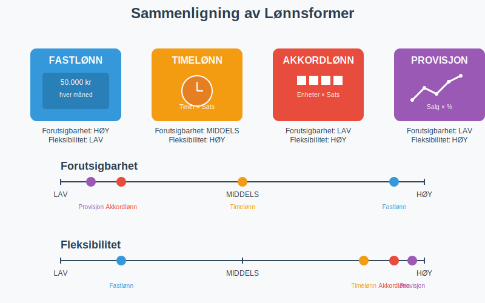
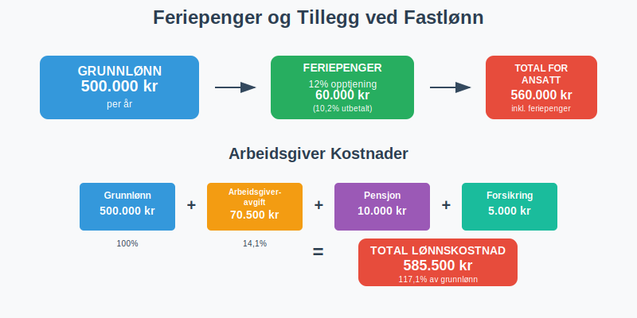
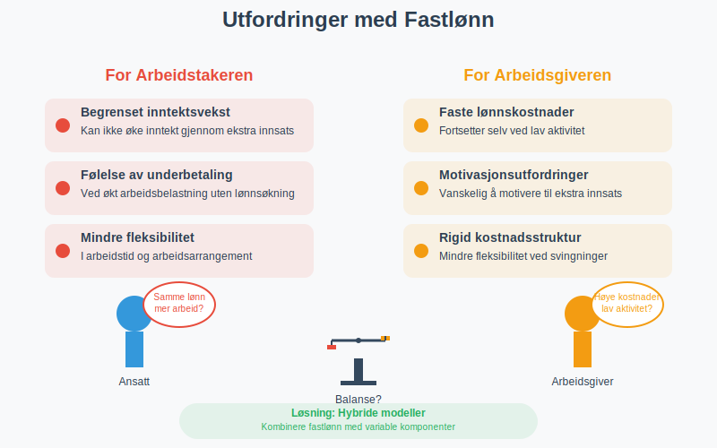
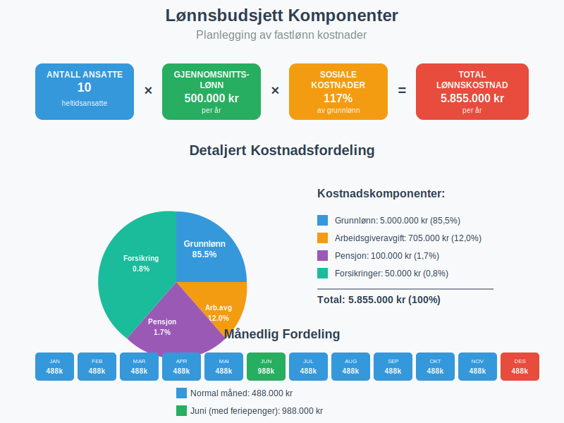

Fastlønn er en fast månedlig eller årlig lønn som utbetales til en ansatt uavhengig av antall arbeidstimer, produksjon eller prestasjoner. Dette er den vanligste lønnsformen i Norge og representerer en forutsigbar inntekt for arbeidstakeren og en fast lønnskostnad for arbeidsgiveren. Fastlønn står i kontrast til andre lønnsformer som akkordlønn eller timelønn.

Hva Kjennetegner Fastlønn?
Fastlønn har flere karakteristiske egenskaper som skiller den fra andre lønnsformer:
- Fast beløp som utbetales regelmessig (månedlig eller årlig)
- Uavhengig av arbeidstimer - lønnen er den samme selv om man jobber noe mer eller mindre
- Forutsigbar for både arbeidsgiver og arbeidstaker
- Basert på stillingsprosent - kan være heltid (100%) eller deltid
- Inkluderer feriepenger og andre lovpålagte tillegg
Fastlønn vs. Andre Lønnsformer
Fastlønn skiller seg fra andre lønnsformer på flere viktige måter:

| Lønnsform | Beregningsgrunnlag | Forutsigbarhet | Fleksibilitet |
|---|---|---|---|
| Fastlønn | Fast måneds-/årsbeløp | Høy | Lav |
| Timelønn | Timer × timesats | Middels | Høy |
| Akkordlønn | Produserte enheter × sats | Lav | Høy |
| Provisjonslønn | Salg × provisjonssats | Lav | Høy |
Beregning av Fastlønn
Månedlig Fastlønn
Den vanligste formen for fastlønn er månedlig fastlønn, hvor den ansatte mottar samme beløp hver måned:
Månedlig fastlønn = Årslønn ÷ 12 måneder
Eksempel:
- Årslønn: 600.000 kr
- Månedlig fastlønn: 600.000 ÷ 12 = 50.000 kr per måned
Stillingsprosent og Deltid
For deltidsansatte beregnes fastlønnen basert på stillingsprosent:
Deltids fastlønn = Heltids årslønn × (Stillingsprosent ÷ 100)
Eksempel:
- Heltids årslønn: 500.000 kr
- Stillingsprosent: 60%
- Deltids årslønn: 500.000 × 0,60 = 300.000 kr
- Månedlig fastlønn: 300.000 ÷ 12 = 25.000 kr per måned
Feriepenger og Tillegg
Fastlønn inkluderer grunnlag for beregning av feriepenger og andre lovpålagte tillegg:

| Tillegg | Beregningsgrunnlag | Prosentsats |
|---|---|---|
| Feriepenger | Opptjent lønn | 12% (10,2% utbetalt) |
| Arbeidsgiveravgift | Bruttolønn | 14,1% (varierer etter sone) |
| Pensjon | Lønn mellom 1G-12G | Minimum 2% |
Fastlønn i Regnskapet
Regnskapsmessig Behandling
Fastlønn behandles som en driftskostnad i bedriftens regnskap. Lønnskostnadene føres månedlig og inkluderer:
- Bruttolønn til den ansatte (inkludert grunnlønn og eventuelle tillegg)
- Arbeidsgiveravgift (14,1% av bruttolønn)
- Pensjonskostnader (minimum 2% av lønn mellom 1G-12G)
- Forsikringer og andre personalrelaterte kostnader
Bokføring av Fastlønn
Månedlig bokføring av fastlønn følger dette mønsteret:
Debet: Lønnskostnad 50.000 kr
Debet: Arbeidsgiveravgift 7.050 kr
Debet: Pensjonskostnad 1.000 kr
Kredit: Skyldig lønn 45.000 kr
Kredit: Skyldig forskuddstrekk 5.000 kr
Kredit: Skyldig arbeidsgiveravgift 7.050 kr
Kredit: Skyldig pensjon 1.000 kr
Ansattreskontro
All fastlønn må registreres i den ansattes ansattreskontro, som inneholder:
- Bruttolønn per måned
- Forskuddstrekk og andre trekk
- Feriepenger opptjening og utbetaling
- Sykepenger og andre refusjoner
- Årsoppgave grunnlag
Alle disse opplysningene må også fremgå av det månedlige lønnslipp som gis til den ansatte.
Fordeler og Ulemper med Fastlønn
Fordeler for Arbeidstakeren
| Fordel | Beskrivelse |
|---|---|
| Forutsigbar økonomi | Samme inntekt hver måned gjør det enkelt å planlegge privatøkonomi |
| Trygghet | Lønnen påvirkes ikke av svingninger i arbeidsmengde eller prestasjoner |
| Feriepenger | Automatisk opptjening av feriepenger basert på fast grunnlag |
| Lånemuligheter | Banker vurderer fast inntekt som mer sikker ved lånesøknader |
Fordeler for Arbeidsgiveren
- Forutsigbare lønnskostnader som gjør budsjettering enklere
- Enkel lønnsadministrasjon uten kompliserte beregninger
- Stabil arbeidsstyrke med mindre turnover
- Lettere å rekruttere da mange foretrekker fast lønn
Ulemper og Utfordringer

For arbeidstakeren:
- Begrenset mulighet til å øke inntekt gjennom ekstra innsats
- Kan føle seg underbetalt hvis arbeidsbelastningen øker betydelig
- Mindre fleksibilitet i arbeidstid
For arbeidsgiveren:
- Lønnskostnader fortsetter selv ved lav aktivitet
- Kan være vanskelig å motivere til ekstra innsats
- Mindre fleksibilitet i kostnadsstrukturen
Fastlønn og Arbeidsmiljøloven
Lovkrav og Regulering
Fastlønn er regulert av Arbeidsmiljøloven og eventuelle tariffavtaler:
- Minstelønn må overholdes (der det finnes tariffavtaler)
- Normalarbeidstid er maksimalt 40 timer per uke
- Overtidsbetaling kan kreves ved arbeid utover normal arbeidstid
- Ferie og sykepenger beregnes basert på fastlønnen
Endring av Fastlønn
Endringer i fastlønn krever:
- Skriftlig avtale mellom partene
- Varsel i henhold til arbeidsavtalen
- Begrunnelse ved lønnsreduksjon
- Oppdatering av ansattreskontro
Fastlønn i Ulike Bransjer
Offentlig Sektor
I offentlig sektor er fastlønn den dominerende lønnsformen:
- Lønnsrammer fastsatt i tariffavtaler
- Automatisk lønnsvekst basert på ansiennitet
- Tillegg for spesielle kvalifikasjoner eller ansvar
- Pensjon gjennom offentlige pensjonsordninger
Privat Sektor
Privat sektor bruker fastlønn kombinert med andre elementer:
- Grunnlønn som fast komponent
- Bonus eller provisjon som variabel del
- Naturalytelser som bil, telefon, etc.
- Aksjeopsjoner eller andre incentivordninger
Fastlønn og Skattemessige Forhold
Skatteplikt
Fastlønn er skattepliktig inntekt som behandles som:
- Lønnsinntekt i selvangivelsen
- Forskuddstrekk trekkes månedlig
- Arbeidsgiveravgift betales av arbeidsgiver
- Grunnlag for beregning av pensjon og trygd gjennom folketrygden
Viktig for lavlønte: Ansatte med lav fastlønn (under frikortgrensen) kan søke om frikort og slippe forskuddstrekk helt. Dette gjelder særlig studenter og deltidsansatte.
Fradrag og Tillegg
Ved fastlønn kan følgende være aktuelt:
| Type | Beskrivelse | Skattemessig behandling |
|---|---|---|
| Reisefradrag | Fradrag for reise til/fra arbeid | Standardfradrag eller dokumenterte kostnader |
| Hjemmekontor | Fradrag for hjemmekontor | Inntil 2.000 kr per år |
| Fagforeningskontingent | Medlemskap i fagforening | Fullt fradragsberettiget |
| Naturalytelser | Bil, telefon, etc. | Skattepliktig tillegg |
Planlegging og Budsjett
Lønnsbudsjett for Bedrifter
Ved planlegging av lønnsbudsjett med fastlønn må bedriften vurdere:

- Grunnlønn × antall ansatte × 12 måneder
- Arbeidsgiveravgift (14,1% av bruttolønn)
- Pensjonskostnader (minimum 2% av kvalifiserende lønn)
- Forsikringer og andre personalrelaterte kostnader
- Lønnsøkninger og inflasjonsjustering
Eksempel på Årlig Lønnskostnad
For en ansatt med 500.000 kr i årslønn:
| Kostnadselement | Beløp | Prosent av grunnlønn |
|---|---|---|
| Grunnlønn | 500.000 kr | 100% |
| Arbeidsgiveravgift | 70.500 kr | 14,1% |
| Pensjon | 10.000 kr | 2,0% |
| Forsikringer | 5.000 kr | 1,0% |
| Total lønnskostnad | 585.500 kr | 117,1% |
Fastlønn og Økonomisk Analyse
Påvirkning på Lønnsomhet
Fastlønn påvirker bedriftens lønnsomhetsanalyse som en fast kostnad:
- Inngår i faste kostnader ved nullpunkt-analyse
- Påvirker dekningsbidrag beregninger
- Viktig komponent i driftsresultat analyser
Kapitalintensitet
Bedrifter med høy andel fastlønn har:
- Høyere operasjonell risiko ved svingninger i omsetning
- Lavere fleksibilitet i kostnadsstrukturen
- Behov for høyere arbeidskapital for å håndtere svingninger
Rapportering og Dokumentasjon
A-melding
All fastlønn må rapporteres månedlig via a-meldingen:
- Bruttolønn per måned
- Forskuddstrekk og andre trekk
- Arbeidsgiveravgift grunnlag
- Pensjon og andre tillegg
Årsoppgave
Ved årsslutt må arbeidsgiver levere årsoppgave som viser:
- Total bruttolønn for året
- Forskuddstrekk og andre trekk
- Naturalytelser og andre skattepliktige fordeler
- Pensjon og andre fradragsberettigede kostnader
Fremtidige Trender
Hybride Lønnsmodeller
Mange bedrifter beveger seg mot hybride lønnsmodeller som kombinerer:
- Fast grunnlønn for trygghet
- Variable komponenter for motivasjon
- Naturalytelser for fleksibilitet
- Langsiktige incentiver som aksjeopsjoner
Alternative Lønnsordninger
For spesifikke arbeidstyper og situasjoner finnes det alternative lønnsordninger som kan være mer hensiktsmessige enn tradisjonell fastlønn:
- Lett salær - for begrenset arbeid i private hjem med skattemessige fordeler
- Akkordlønn - for produksjonsbasert arbeid
- Honorar - for faglig arbeid og konsulentoppdrag
Digitalisering
Teknologiske løsninger påvirker fastlønn gjennom:
- Automatisert lønnskjøring og rapportering
- Selvbetjening for ansatte
- Integrerte systemer mellom lønn og regnskap
- Sanntidsrapportering til myndigheter
Konklusjon
Fastlønn er den mest utbredte lønnsformen i Norge og gir forutsigbarhet for både arbeidsgiver og arbeidstaker. For bedrifter representerer fastlønn en fast kostnad som må planlegges nøye i budsjett og lønnsomhetsanalyser. Korrekt håndtering av fastlønn i regnskapet og overfor skattemyndighetene er avgjørende for å unngå problemer og sikre god økonomistyring.
Relaterte Begreper
- Grunnlønn
- Månedslønn
- Årslønn
- Stillingsprosent
- Lønnskostnad
- Personalutgifter
- Arbeidsgiveravgift
- Feriepenger
For nasjonale bransjetall og lønnsstatistikk, se også Gjennomsnittslønn i Norge.